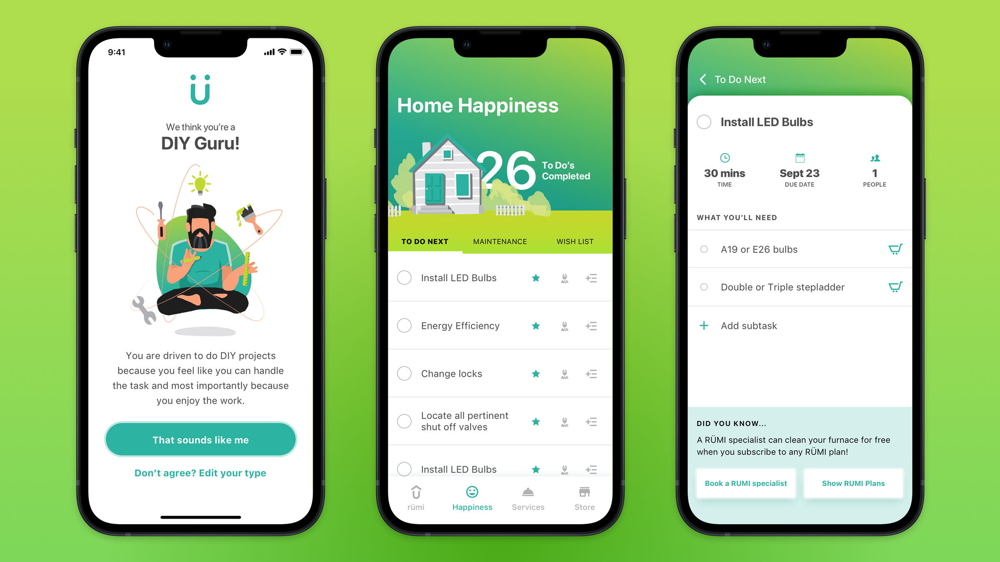
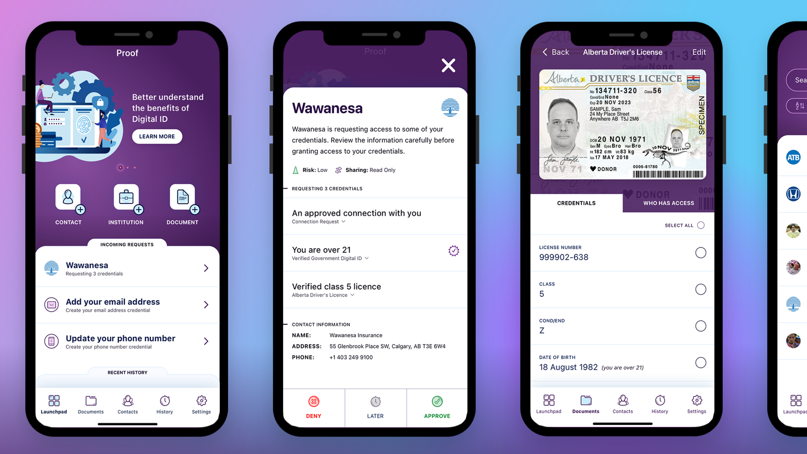
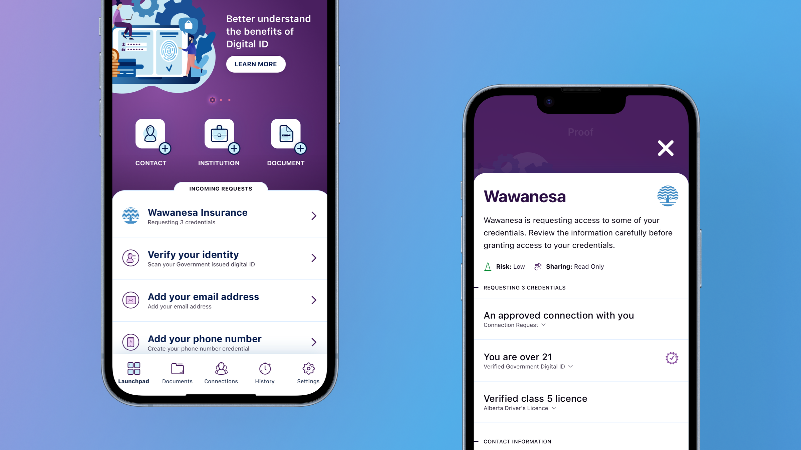
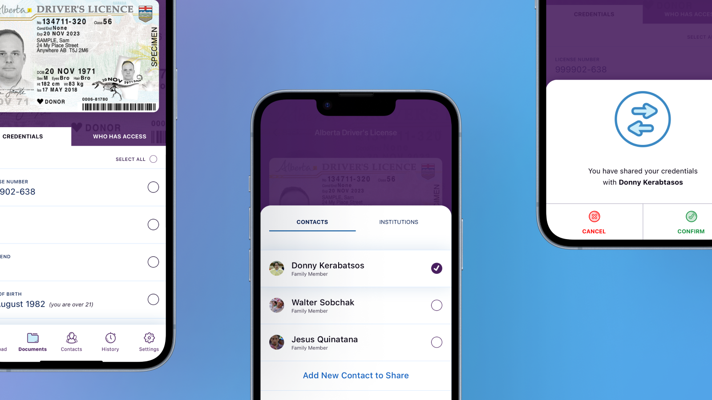
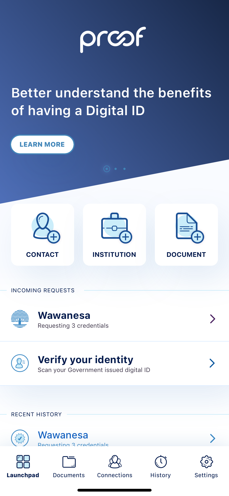
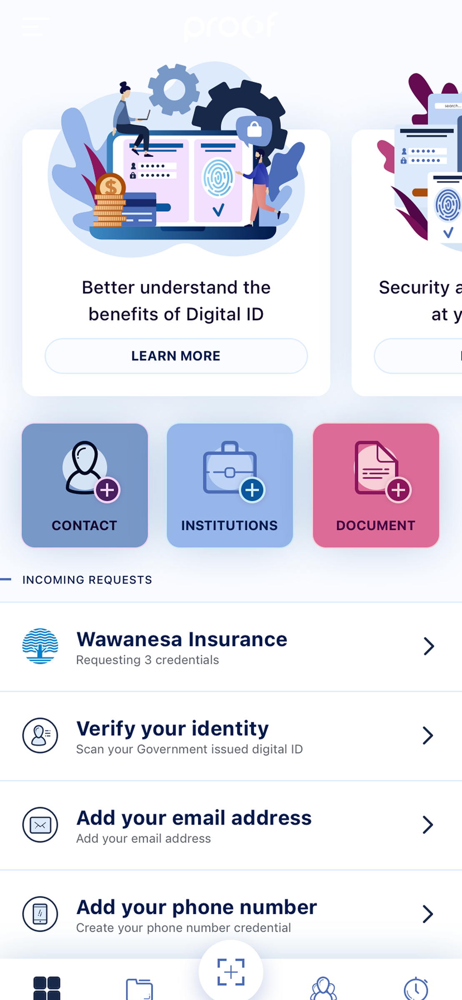
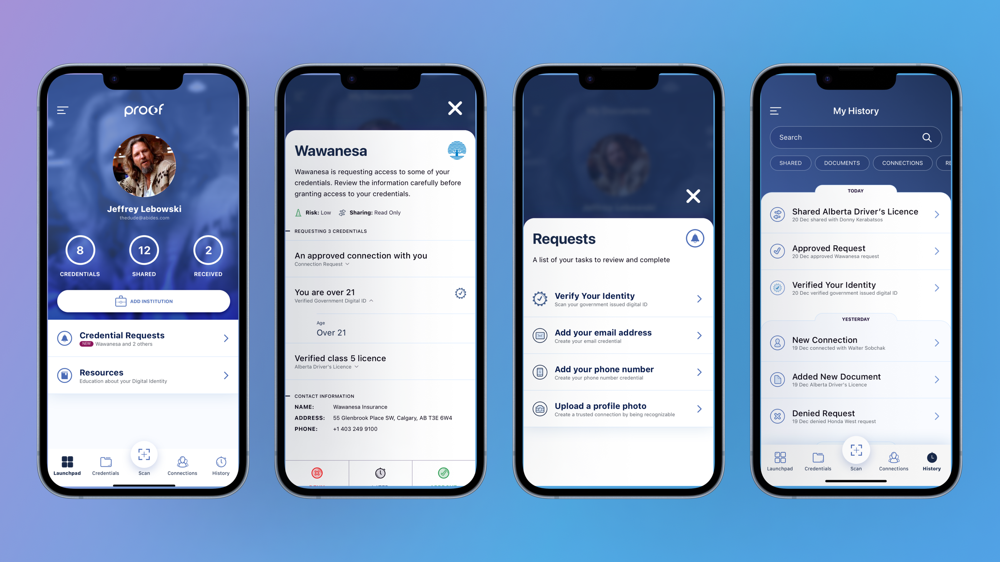

Making homeownership feel more manageable, without pretending it's simple
View project
Proof · Digital identity
Proof explored a digital identity product for Alberta residents, built around the idea that people should be able to securely store, access, and share personally identifiable information from the device they already carry.

Paper records are difficult to organize, easy to misplace, and rarely available when people need them most. But putting that information on a phone creates a different kind of problem.
People needed to feel confident that their identity was secure, that sharing was intentional, and that they could control exactly who had access to what.
The experience needed to make sensitive actions feel deliberate. Requests had to be visible, understandable, and easy to approve or deny without making users feel like they were handing over more than they intended.
This meant designing around trust as much as access.
With no directly comparable product to learn from, research focused on understanding how people already managed identity, documents, and proof of ownership in real situations.
The team looked at existing behaviors around MyAlberta Digital ID and interviewed Albertans to identify practical use cases, including buying a car, getting insurance, and interacting with healthcare providers.
The MVP centered on a launchpad experience where users could quickly access documents, trusted contacts, institutions, and incoming requests.
That foundation gave the product a clear starting point. Show people what they have, what needs attention, and what actions are available.

Proof had to support moments where identity and access mattered, including high-stress situations where someone else may need to act on a user's behalf.
A trusted contact could access delegated credentials, like identification, insurance details, or medical proxy information, when immediate action was needed.
Users could manage who had access to each document and control which fields were shared.
The sharing flow included intentional confirmation, making sure users understood what they were sharing, who they were sharing it with, and what level of access they were granting.

Proof needed to feel secure, modern, and easy to understand across platforms. The style guide established the visual foundation for that experience, including color, typography, spacing, button styles, and core tile components.
More than visual consistency, the style guide gave engineering a usable framework for building a product that felt trustworthy from screen to screen.
The design system helped make the MVP feel cohesive and intentional, even as the product explored unfamiliar behaviors around identity, delegation, and secure sharing.
For a new concept, that consistency mattered. It made the experience easier to understand and easier to believe in.


Early concepts leaned heavily into education, helping users understand the benefits of digital identity and what the product could do.
Testing revealed that this made the experience feel too much like a content app. Users expected something more personal, more useful, and more centered around their own identity.
The design shifted toward a more profile-centered experience, making functionality more apparent and helping users understand what actions they could take.
That change brought the product closer to the real user need: managing identity in practical, everyday situations, not learning about it in the abstract.


The refined product brought documents, requests, trusted contacts, institutions, and activity history into a clearer structure.
Users could respond to credential requests, manage access, review their history, and understand the state of their identity without having to piece the system together themselves.
Sensitive workflows were designed to slow people down just enough to understand what was happening, without making the product feel heavy.
That balance was the center of the work, making identity easier to use without ever making it feel casual.

Proof pointed toward a future where people could manage, share, delegate, and use identity documents without relying on paper records or fragmented processes.
Before the product could launch, priorities shifted and the initiative was paused. The work remained valuable because it explored a problem that still matters: how people safely access and share sensitive information when timing, trust, and control all matter.
The strongest lesson was that digital identity isn't a storage problem so much as a trust problem, a timing problem, and a control problem.
Design had to make the system feel useful without making it feel risky.
Proof was about more than digitizing documents, it was about giving people clearer access to sensitive information while making every request, permission, and share feel intentional.
